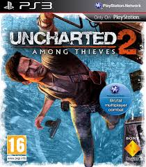
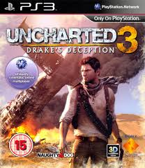

uncharted drake's fortune Na het vinden van een 400 jaar oude aanwijzing in de doodskist van Sir Francis Drake gaat Nathan Drake op zoek naar de mythische schat van El Dorado, waarbij hij stuit op een vergeten eiland in het midden van de Grote Oceaan. De expeditie wordt levensgevaarlijk wanneer Drake op het eiland strandt en door huurlingen wordt opgejaagd. Drake en zijn metgezellen moeten tegen een overmacht vechten om te overleven. Ondertussen leggen ze de verschrikkelijke geheimen van het eiland bloot.

uncharted 2 among thieves Als alles Drake lijkt tegen te zitten, belandt hij opnieuw in de verraderlijke wereld van dieven en schattenjagers die hij eerder vaarwel had gezegd. Met een mysterieus relikwie begint voor Drake een avontuurlijke expeditie om de legendarische vallei Shambhala in de Himalaya te vinden. Al snel raakt hij verstrikt in een gevaarlijk kat-en-muis-spel met een voortvluchtige oorlogsmisdadiger die op meer aast dan alleen de mythische schatten van de verloren stad. Gevangen in een web van leugens en voortgejaagd door een levensgevaarlijke achtervolging die het uiterste van hem vergt, wordt Drake gedwongen alles op het spel te zetten is zijn geluk dan eindelijk uitgewerkt?

uncharted 3 drake's deception Op zoek naar het fabelachtige Atlantis van het zand vertrekt geluksjager Nathan Drake op een riskante reis naar het hart van de Arabische Woestijn. Een reis die hem en zijn mentor Victor Sullivan in conflict brengen met een occulte samenzwering, onder leiding van een meedogenloze schurk. Wanneer de verschrikkelijke geheimen van deze verloren stad zijn blootgelegd, verandert Drakes avontuur in een wanhopige overlevingsstrijd die het uiterste van zijn vaardigheden vergt en hem met zijn diepste angsten confronteert.